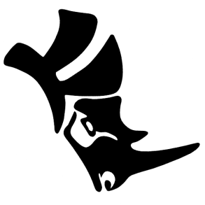

| 自我介紹 | 我的名字是劉義凡，畢業成功大學科技藝術研究所。研究所期間主要是研究人工智慧在藝術領域之應用。大學是念工業設計，大學畢業之後曾在系統公司就職過一段時間，並在其中深感跨領域溝通的重要性，需要理解其他領域的想法與執行層面的困難。因此，當時就決定離開工作崗位並就讀跨領域相關的學位，而科技藝術就是需要同時擁有設計藝術的美感與技術執行層面的思考來解決問題，並發展出一個新的科技藝術系統 |
| 學歷 | 國立成功大學 科技藝術 |
| 技能 |
|
| 語言 |
|
| 專長 |  |
| 研究所 | 在研究所期間，也有幸能與其他系所的同學合作交流，並嘗試設計出一套提供年長者衛浴安全的呼救系統，並在其中扮演者產品設計一職，設計內部模組零件的空間配置與外觀造型，共同討論出系統裝置的使用方式。同時，還持續研究人機互動，並用unity/TouchDesigner/p5.js來製作一些簡單的互動遊戲，以及使用Arudino實作的互動裝置。 |